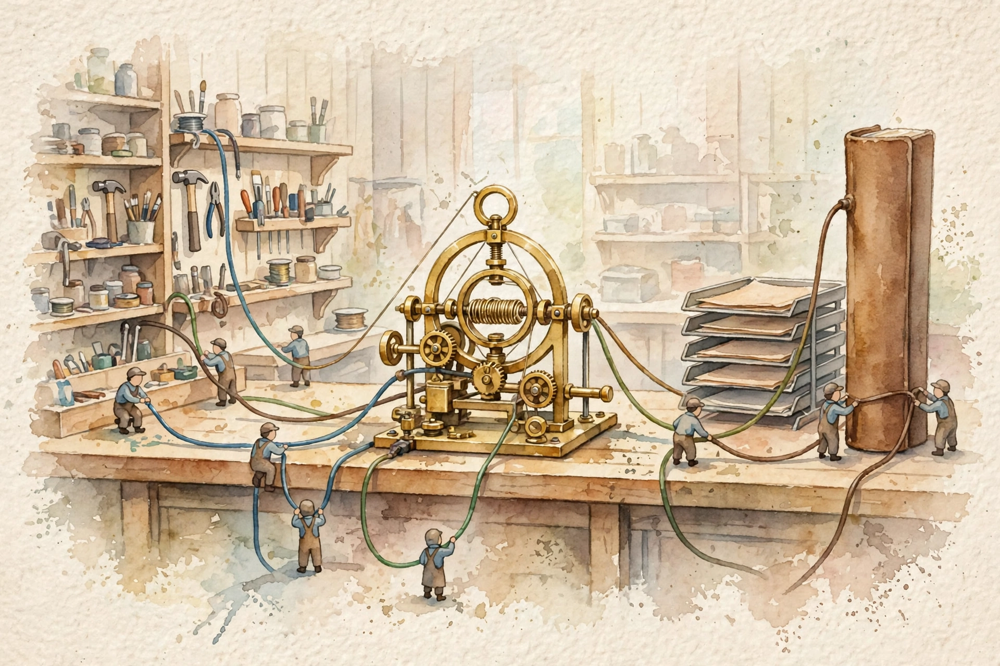
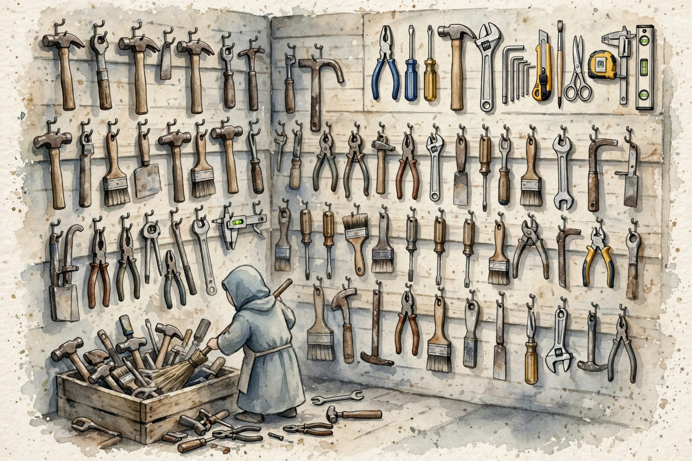
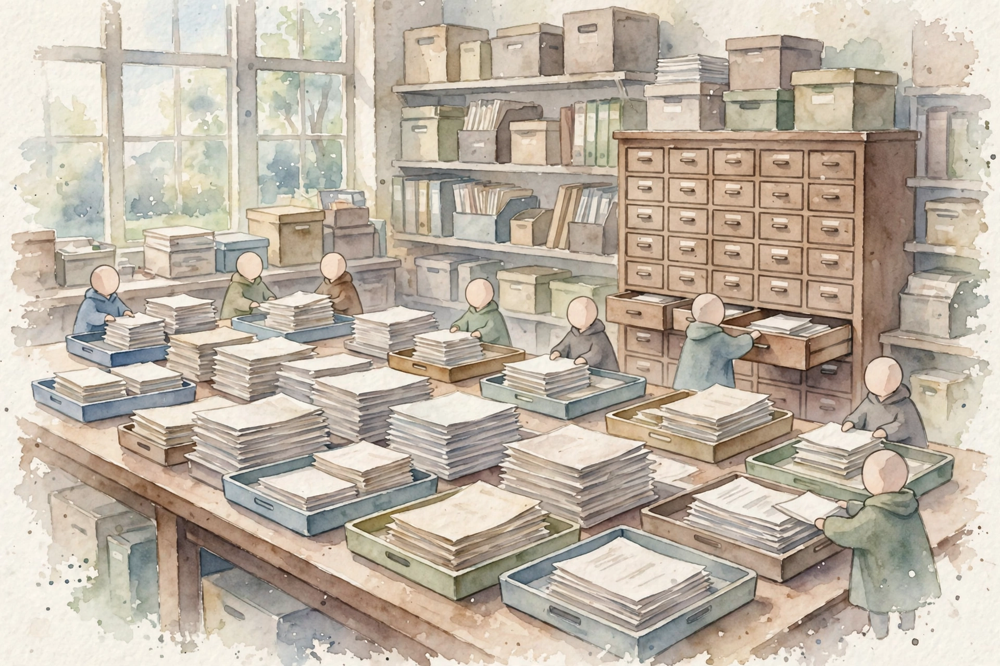
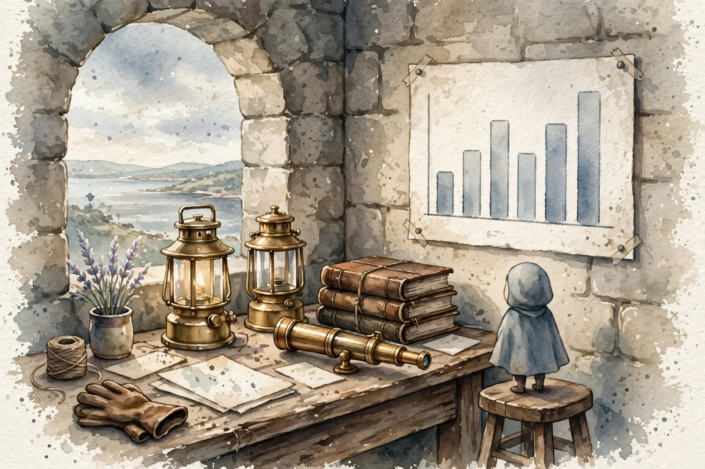

Companion · CCAR-P Domain 3 · Integration
Domain 3 is the largest domain in CCAR-P at 19 percent of the exam. This companion walks the full volume in source order: the first API call, streaming, the tool loop, tool bloat, connection mechanisms, tool security, RAG pipelines, retrieval match, trade-off levers, observability, and progressive discovery.
SOURCE / INTERPRETATION: HOW TO READ THE TAGS
From the lesson SOURCE: the idea, and every number beside it, comes from the cited section of the source. The phrasing is the companion's.
Illustration INTERPRETATION: invented by the companion: an analogy, a toy with made-up values, or a what-if. Never source content.
companion INTERPRETATION: companion voice: the idea above the tag is from the source. The generalization below it is the companion's.

From the lesson D3 intro
Integration is the domain of connections. A Claude system in production is never just a model call. It is an agent loop wired to tools, documents, services, logs, and safety checks, all inside a budget of tokens, milliseconds, and dollars. The exam tests whether you can design those connections and defend the trade-offs.
The volume names the wires one by one. The user sends one message, and that input is the one the designer controls least. The agent loop sits at the center: the model thinks, calls tools, reads results, and thinks again. MCP tools are the hands. RAG retrieval is the memory. Evals and guardrails are the conscience. Logs and traces are the recorder. A context budget bar under the loop is the hard limit, and every wire spends from the same budget.
Every Integration item gives a scenario plus a constraint: an accuracy target, a latency budget, a compliance rule, or a cost ceiling. Read the constraint first. Then judge the options against it. The credited answer is usually the one that satisfies the constraint with the least machinery, not the most elaborate architecture. Several options will be partly right. That is the whole game.
From the lesson Unit 1
Every Claude system runs on one repeated action, from a weekend script to a product with a million users. Your code sends a request to the model and reads the reply. That request goes to the Messages API, the front door every integration in this volume walks through. An API is a documented way for two programs to talk: one side sends a structured request, the other side sends a structured reply. Streaming, tool use, authentication, and RAG are all machinery around this one call. If the call is wrong, slow, or unauthenticated, no later machinery can save it.
A call has two halves. The request goes to one endpoint: POST to the /v1/messages path on the Anthropic API host. The headers say who you are: the x-api-key header carries the secret key, and the anthropic-version header pins the API version by date. The body says what you want: model names which Claude answers, max_tokens caps how many tokens the model may write back, and messages holds the conversation as role and content pairs. The optional system field holds the system prompt, apart from the conversation.
A token is the unit the model reads and the API bills: roughly 3 to 4 characters of English. Input tokens are what you send. Output tokens are what the model writes. The reply reports both counts in the usage field, and production code reads that meter on every call, because tokens convert directly to dollars.
The response carries four fields you must know. Content holds the answer as a list of blocks. Stop_reason says why the model stopped: end_turn means it finished, max_tokens means it hit your cap, and tool_use means it wants to call a tool. Usage carries the billing counts. The id field names the message for logs and support tickets. One more property shapes every design in this volume: the API is stateless. It remembers nothing between calls. Your code resends the full history with every request, so a 20-turn conversation costs more per turn than a 2-turn one. The context window is the hard ceiling on one request. It is a ceiling, not a target.
A well-formed call can still fail in flight. Networks drop, providers overload, keys expire. Production code treats failure as normal and answers each status code in its own way. Exponential backoff is the standard retry rhythm: wait 1 second, then 2, then 4, then 8. Add jitter, a small random delay, so a fleet of servers does not retry in lockstep and strike the provider again. Retry only 429 and 5xx errors. A client timeout bounds every call, so a hung request cannot hang the user forever. When a retry could repeat a side effect, such as a double charge, send an idempotency key so the provider can tell a repeat from a new request.
The rule to carry: 400 and 401 mean fix your side. A malformed request fails in the same way on every retry. 429 and 5xx mean wait and retry with backoff and jitter. And the API key must never appear in logs.
From the lesson Unit 2
A correct call can still fail the user in a different way: the answer takes thirty seconds and the screen shows nothing. By default the API waits until it generates the entire answer, then sends it at once. Streaming changes the delivery without a change to the generation: the server sends each piece of the answer the moment it is ready, and the interface renders it live. The total time is identical. What collapses is time to first token, the wait before the first visible word, which is what the user actually feels.
You send the same request with stream set to true. The server holds the connection open and pushes a sequence of Server-Sent Events. The sequence runs message_start, content_block_start, then content_block_delta many times, then content_block_stop and message_stop, with message_delta at the end that carries usage and the stop reason. Your code joins the deltas into the full text. A 25-second answer with 0.6-second time to first token feels instant. The same answer delivered at once feels broken.
The connection can drop mid-stream and leave a partial answer. Production streaming code handles resume or a graceful fallback: show what arrived, offer a retry, and never present a fragment as complete.
Stream when a human watches: chat, copilots, any interface where a wait feels like failure. Do not stream when nobody watches. Batch jobs, eval harnesses, and background agents usually want the complete response object before action. Tool calls can stream too, but most agent loops wait for the complete tool_use block before action. Action on a partial argument list is dangerous. The rule to carry: a complaint that a chat feels slow, with an acceptable total time, points to the stream delivery fix. A total time that is too long points to the trade-off levers in Chapter 10.
From the lesson Unit 3
A model alone can only write text. Tool use gives it hands. Your code declares named functions the model may request. The model decides when to call one and with what arguments. Your code executes the call, and the result goes back to the model for the next step. The model never touches your database, your APIs, or your files directly. It only ever asks, in a structured form, and your code decides what actually runs. This request, ask, execute loop is the agent loop in its simplest form: think, call a tool, read the result, think again.
Open the step-through below the text. It walks one full turn of the loop, from the tools array to the final text answer.
Two rules govern every tool integration from here on. The trust rule: treat everything the model emits as untrusted input to your systems. Validate arguments against the schema before action. Run tools with the least privilege they need. Never let a tool result issue instructions to the agent. That failure has a name: prompt injection, where hostile text inside a tool result steers the agent. The cost rule: every turn of the loop resends every tool schema. Each tool you declare taxes every future turn, whether the loop calls it or not. Chapter 5 puts a price on that tax.
companion Step through the sequence. Open one step at a time.
Your app sends messages plus a tools array. Each tool carries a name, a plain-language description the model reads, and an input_schema in JSON Schema that states the fields, the types, and the required parts.
The reply holds a tool_use block with an id, a tool name, and arguments, and stop_reason reads tool_use. The model did not call anything. It produced a structured request and stopped.
Your code checks the arguments against the schema, then runs the real function. Validation sits here, in your code, because model output enters your systems as untrusted input.
Your app sends a new message with a tool_result block that carries the matching tool id and the result content. Tool results are simply the next message in the conversation.
The loop repeats until the model answers in text with stop_reason end_turn. A task with three tool calls costs four or more model calls, and every call resends the tool schemas.
From the lesson Unit 4
Capability bloat means an agent holds more tools than it can use well. The model reads every tool schema on every turn before it decides what to do. The instinct to add more tools is the trap. Past a point, each new tool makes the agent slower, more expensive, and more likely to pick the wrong tool. The exam tests whether you can spot a bloated configuration in a scenario and prescribe the fix.
Three mechanisms punish bloat. First, the token tax: tool schemas travel inside the system prompt of every request. A typical schema costs 200 to 500 tokens. Fifty tools put 10,000 to 25,000 tokens on every turn, before the user message and before any tool result. Second, decision quality falls: tool selection is a classification problem over the tool list. With 12 well-named tools, the model picks correctly almost every time. With 60 tools with names that overlap, attention spreads and wrong picks rise. The volume advises a low count, roughly under 20 per agent, and marks the exact number as unverified guidance rather than an official rule. Third, the failure surface grows: every tool is a permission, a network call, and a possible injection path.
Take a support agent with 50 tools, each schema at an average of 350 tokens. The tax is 50 times 350, or 17,500 schema tokens on every turn. At $2 per million input tokens, that is $0.035 per turn, paid whether the tools run or not. Trim to 12 tools and the tax falls to 4,200 tokens, about $0.0084 per turn: the same agent job at one quarter of the overhead. The volume puts the waste at roughly $270,000 per year for tools the model almost never calls. Latency suffers too, because a larger prompt means more tokens to process before the first token returns. A confused tool choice costs a wasted round trip, often 2 to 5 seconds.
Delete and merge first: remove tools nobody calls, and merge tools with overlap into one tool with a parameter. Next, subagents: split one 50-tool agent into three specialists with about 12 tools each, under one orchestrator. Next, dynamic tool loading: tools register per task, so the list the model sees stays small while capability stays large. Last, skills and progressive disclosure: the model sees a one-line skill description and loads the full skill on demand. The diagnosis to carry: a large tool count of 30, 50, or 80, plus wrong tool calls, high cost, or slow responses, means capability bloat. A larger model is the trap answer, because the failure sits in tool selection, not in reason quality.
The 50-tool tax, per turn
Schema tokens on every turn, before the user message
| Item | Value |
|---|---|
| 50 tools at 350 tokens | 17500 |
| 12 tools at 350 tokens | 4200 |
Source: Unit 4 worked example in 03-integration.html in the source repo. Fifty tools at 350 tokens per schema give 17,500 tokens and about $0.035 per turn at $2 per million input tokens. Twelve tools give 4,200 tokens and about $0.0084 per turn.

From the lesson Unit 5
Three ways connect Claude to the outside world. MCP, the Model Context Protocol, is the open standard: servers expose tools, resources, and prompts, and any MCP host can use them. Direct API or CLI integration means your code calls the model API itself, or drives Claude Code or the Agent SDK: maximum control, and you own every wire. Agent-to-agent means agents talk to peer agents, most often via the A2A protocol: one agent finds the capability of another agent and delegates tasks to it. The mechanism choice constrains auth model, latency, failure ownership, and ship speed. The wrong mechanism is never broken. It is wrong for the constraints.
Before MCP, every tool integration was custom glue. MCP standardizes the plug. A server advertises its tools with JSON schemas, the client lists them, and the model calls them. Results flow back as structured content. Servers also expose resources, read-only data the client can subscribe to, and prompts, reusable templates. Exam facts: STDIO transport serves local servers, Streamable HTTP serves remote ones, messages travel as JSON-RPC, and remote auth uses OAuth 2.1. Direct API work gives control over retry logic, the tool execution sandbox, custom auth, and exact prompt assembly, at the price of ownership of the loop, the registry, and error handling. A2A fits when capability lives in another team, trust domain, or vendor: agents publish agent cards with capability descriptions and exchange tasks with states such as submitted, working, and completed.
Read down the factor the scenario names. A standard tool plus speed points to MCP. A proprietary system plus unusual security points to direct API. The autonomous agent of another team points to A2A. Never pick an option that frames MCP and the API as substitutes. MCP standardizes tool and data connections. The Messages API is still how you talk to the model. Most production systems use both.
A SaaS company wants its agent to read customer data from Postgres and files from Google Drive. Community MCP servers exist for both, so MCP over Streamable HTTP with OAuth turns weeks of custom glue into configuration. A bank needs the agent to call a proprietary risk engine inside its own network, with hardware-backed identity and custom audit envelopes. No standard covers it, so direct API integration with the bank tool layer fits. A logistics company holds a routing optimizer from another vendor, built as an autonomous agent. The assistant needs delivery plans from it, so A2A fits: the vendor publishes an agent card and the assistant delegates tasks. The exam rewards per-connection judgment, not one mechanism for all three.
From the lesson Unit 6
Authentication answers who calls. Authorization answers what they may do. In a Claude system, both questions apply at three layers: the user talks to your app, your app talks to the model API, and the agent talks to tools and data. A chatbot that only writes text can leak information. An agent with tools can move money, delete data, and email customers. Every tool connection is a trust decision, and the exam tests whether you can read an architecture diagram and spot the trust decision the design skipped.
MCP runs over two transports. STDIO launches the server as a local subprocess and talks over pipes: fast, simple, no network, and no auth needed, because the OS process boundary is the trust boundary. Streamable HTTP runs the server as a remote service over HTTPS, for shared or multi-tenant tools, and it needs real authentication, because the network is not a trust boundary. OAuth 2.1 is the standard for delegated authorization behind remote MCP. The user clicks connect, the client redirects the user to the authorization server, the user logs in there and approves narrow scopes, and the server returns an authorization code the client exchanges for a short-lived access token. The client presents the token on each call. The server validates the token signature and expiry and checks the scopes, and only then lists tools or runs them. A scope is a named permission inside the token. Least privilege means the narrowest scopes that do the job.
Your app also authenticates to the model provider. Three patterns recur: a direct API key, fine on a server and never inside a browser or mobile app. AWS Bedrock with IAM roles, where the model call inherits your AWS identity. Google Cloud Vertex AI with service accounts is the third pattern. The exam gap list runs to six items. One shared API key for all users kills per-user identity and revocation. Auth at connection time only lets a read-scoped token reach delete tools. Tools with standing admin rights turn a bad query into dropped tables. No human in the loop on irreversible actions lets a payment or a deletion pass without a person. Tool output treated as instruction is prompt injection, and with tool authority it becomes a confused deputy attack. A missing audit trail fails compliance review, because nobody can answer which user, through which tool, changed what, at what time.
Wrong: one API key for all users, read and write scope for everyone, an agent that can delete any event, no approval step, and no logs. A prompt-injected email that orders a mass cancellation executes with no check. Right: per-user OAuth with read scope by default, write scope only when the user asks to book, a confirmation click on every write, scope validation on every tool call, and all calls in a log with the user ID. The same injection attempt now dies at the scope check or the approval click. The gap-hunt checklist to carry: per-user identity, per-call scope checks, least-privilege service accounts, human approval on irreversible actions, tool output treated as data, and full audit logs. Encryption is the classic true-but-irrelevant distractor: TLS protects data in transit and says nothing about who may call what.
From the lesson Unit 7
RAG, retrieval-augmented generation, means the system fetches relevant passages from your documents and puts them in the prompt before the model answers. The model then answers from those passages instead of from memory. Two halves exist: the indexing pipeline, offline, where documents go in and searchable chunks come out. The query pipeline runs online. A question goes in and passages plus an answer come out. This chapter covers indexing. Chunking cuts documents into pieces small enough to embed and retrieve. An embedding is a list of numbers that represents the meaning of a chunk, and similar meanings get similar vectors. An index is the data structure that finds the nearest vectors fast. Chunking decides everything downstream: the unit of meaning, the precision of retrieval, and the cost of the prompt.
Six stages run in order. Ingest and clean pulls documents from drives, wikis, and PDFs and strips boilerplate such as headers and footers. Dirty input is the number one cause of bad RAG. Chunk cuts the text. Enrich attaches metadata to each chunk: title, section heading, date, author, and access permissions, which later enable filters and per-user access control at retrieval time. Embed runs each chunk through an embedding model to get its vector, at a real cost per token. Index stores the vectors. HNSW, a layered graph, finds approximate nearest neighbours in logarithmic time, and most teams keep a keyword index beside it for hybrid search, because BM25 matches exact terms such as error codes that embeddings blur. Refresh keeps the index current: batch reindexing is simple and stale up to a day, streaming updates are fresh and need more machinery, and a versioned index allows a rollback after a bad ingest.
Fixed-size cuts suit simple baselines. Recursive cuts are the general default. Semantic cuts suit prose with topic drift. Proposition-level cuts suit precise factual questions and answers, at a far higher chunk count and cost. Overlap is the standard fix for the boundary problem, where an idea split across a cut survives in neither chunk: each chunk shares 10 to 20 percent of its tokens with the next, and 50 tokens of overlap on 512-token chunks is a common start point. The exam rewards the smaller, well-bounded chunk with overlap, in the 256 to 512 token range, over the giant chunk, because large chunks dilute the signal of the retriever.
The corpus holds 100,000 documents at an average of 2,000 tokens each, or 200 million tokens in total. Recursive chunking at 512 tokens with 50 tokens of overlap gives 200,000,000 divided by 462, or about 433,000 chunks. Embedding at a typical $0.02 per million tokens costs about $4 for the whole corpus. The HNSW index for about 430,000 vectors at 1,024 dimensions takes roughly 2 to 4 GB of RAM. Retrieval latency runs 10 to 50 ms. The lesson: for most corpora, chunk count and index RAM are the planning numbers, not embedding cost. The pipeline rules to carry: match the chunker to the document shape, always attach metadata, and choose the refresh strategy from the freshness requirement.

From the lesson Unit 8
Chapter 8 built the index. This chapter decides how to ask it. The same index answers in very different ways under different retrieval strategies. The right strategy depends on two things: the data shape, what the documents look like. The second is the query pattern, what users ask. The match between the two is the skill the exam tests.
Eight strategies sit on the shelf, and the exam asks about three most often. Dense semantic search handles paraphrased questions over prose. BM25 handles exact codes and identifiers: it scores documents by term frequency, discounts common terms, and counts rare terms heavily, so an exact error code matches exactly while an embedding may blur it into a near neighbour. Hybrid search runs both. A reranker, usually a cross-encoder model, reads the query and each candidate passage together and scores relevance with precision. It runs on the top 20 to 50 candidates only, because it is slower than the first stage, and it buys a typical gain of 5 to 15 points of precision on the final top 3 at 100 to 300 ms of latency. The shelf also holds metadata filters, text-to-SQL for tables, recency-aware rank for time-stamped data, query rewrite for short or vague queries, and graph retrieval for linked entities.
Ask what the queries look like. Exact identifiers or error codes point to BM25. Natural-language questions over prose point to dense search. Both patterns in one product point to hybrid. Then ask what the data looks like. Tables with numbers point away from vector search, to text-to-SQL or metadata filters. Time stamps everywhere point to recency-aware rank. Linked entities point to a graph. Default to hybrid plus rerank when the corpus mixes patterns and no single pattern dominates: it is rarely the absolute best at one pattern and almost never the wrong answer. Reserve GraphRAG for questions with true multi-hop structure. It needs an entity extraction pipeline and a graph store, and the exam punishes it as a choice for simple lookup work.
The corpus holds 500,000 IT support articles with error codes, prose fixes, and time stamps. An exact code query goes to BM25, because dense search may return articles about similar but wrong errors. A paraphrase query about a laptop that will not join office wifi goes to dense search, because BM25 fails when the article uses formal terms the user never types. A latest-fix query goes to hybrid retrieval plus a recency boost on the time stamp metadata, because pure similarity returns an old article. The production answer for this corpus: hybrid retrieval, metadata filters for date and product, and a rerank of the top 30. The method to carry: name the pattern first, then the strategy, then why the alternative fails. The claim that vector search made keyword search obsolete is always a distractor.
From the lesson Unit 9
Every production Claude system balances three forces. Accuracy is how often the system gets the right answer, measured per task. Latency is how long the user waits, measured as percentiles: p50 is the median, p95 is the value 95 percent of requests beat, and p99 is the unlucky tail. Cost is dollars per request, driven almost entirely by tokens in and tokens out. No design maximizes all three. Real stakeholders give constraints, such as p95 under 3 seconds, accuracy above 95 percent, and under $0.10 per ticket. The exam scenarios are constraint puzzles: justify a configuration against a stated budget instead of a pick of the best in a vacuum.
Four levers trade the three forces in different ways. Model selection is a price ladder: each tier up costs roughly 2 to 2.5 times more and buys accuracy on hard tasks, at prices the volume marks as illustrative. Prompt caching changes the math: cache writes cost about 25 percent extra, and cache reads cost about 90 percent less, so a repeated document block pays full price once and one tenth after. Extended thinking lets the model spend extra output tokens on reason work before the answer. A budget such as 10,000 thinking tokens caps it, the bill counts thinking tokens as output, and a large budget on a latency-sensitive path is a known failure. Routing is the classic production pattern: a fast small model handles every request and escalates to the big model only when it is unsure or a verifier flags the answer, so at an 80 percent resolve rate the system pays big-model prices on 20 percent of traffic. Streaming cuts time to first token, and parallel tool calls and subagents make the loop wait for the slowest branch, not the sum.
The constraint set: p95 latency under 3,000 ms, accuracy above 90 percent on ticket resolution, and 2 million tickets per year. Design A runs one large model with thinking on: 8,000 input tokens at $2 per million plus 1,200 output tokens at $10 per million gives $0.028 per ticket and $56,000 per year, at a p95 of about 4,200 ms. It fails the latency budget. Design B routes: the small model resolves 95 percent at 900 ms p95, and the large model handles 5 percent at 4,200 ms. The blended p95 is about 1,400 ms, because the 95th-percentile request still sits on the fast path. Cost is 95 percent of $0.008 plus 5 percent of $0.028, or $0.009 per ticket and $18,000 per year. Measured accuracy is 91 percent, because the escalated 5 percent are exactly the hard cases. Design B wins on all three constraints. One trap deserves a name: a weighted average of two p95 values is not a p95 of anything. Compute percentiles on the mixture, never across the percentiles. A second trap: a large model with bad chunks loses to a small model with great chunks on RAG tasks, because a model cannot answer from facts it never saw.
From the lesson Unit 10
Observability is the ability to answer what happens inside the system, and why, from the outside. Three pillars carry it. Traces record the journey of one request, broken into spans, where each span times one operation such as a model call or a tool call. Metrics aggregate numbers over many requests: p95 latency, error rate, tokens per request, dollars per request. Logs hold the detailed text of events. An agent is a nondeterministic system: the same input can take different paths on different runs. When accuracy drops or costs spike, no stack trace points at a line of code. A trace shows which tool returned bad data, which model call invented facts, or which loop ran 40 turns. At scale means thousands of requests per minute, so the strategy must sample, aggregate, and alert, or the observability system costs more than the product.
One user request becomes one trace with a unique trace ID. Every operation becomes a span with a start time, an end time, a parent span, and attributes such as model name, token counts, tool name, arguments, and result size. The agent loop gives a natural span tree: the request span parents the model spans, and the model spans parent the tool spans. You diagnose a slow request by a read of the span tree for the longest bar. The metric set to watch: latency percentiles per agent and per tool, token use per request, tool success rate per tool, tool selection accuracy from sampled review, task success rate as the business metric, and the guardrail trigger rate, where a sudden jump means an attack or a data change. Personal data will appear in prompts, tool results, and traces, so redact at the boundary: strip or hash personal data before it enters the log pipeline, and keep full payloads only in a short-lived encrypted debug store with strict access. Metrics tell you the system is slow. They do not tell you it is wrong. Eval hooks close that gap: score a sample of production traffic on a schedule, such as 50 recent conversations every hour, and quality drift surfaces in hours instead of in a churn report.
Storage equals requests times bytes per trace times retention days. A system with 5 million agent turns per month and a full trace at an average of 40 KB stores about 200 GB per month at full retention for 30 days. Head-based sampling decides at request start and keeps, say, 1 percent of traces: cheap, and blind to rare failures. Tail-based sampling decides after the request completes: keep 100 percent of errors and slow requests, and 1 percent of the rest. In the worked example that is roughly 3 percent of traces, or about 6 GB, with the same power to debug failures at one thirty-third of the storage. The selection rule to carry: pick tail-based sampling over a log-everything design, redact personal data at the boundary, instrument per-tool spans and success rates, and add eval hooks for quality drift. Dashboards of averages hide the failures. Averages smooth away the p99, and uptime says nothing about wrong answers.

From the lesson Unit 11
Monolithic context loads everything the agent might need into the prompt up front: all tool schemas, all retrieved documents, all instructions, and the full conversation history. Progressive discovery is the opposite: start with a small core prompt, and load each piece of context only when the agent asks for it or the task demands it. The context window on the current generation holds 1,000,000 tokens on the large models and 200,000 on Haiku 4.5, per the volume. It is a hard ceiling, not a target. Monolithic context fails in three predictable ways: cost, because you pay for every token on every turn. The lost-in-the-middle effect, because models attend best to the start and end of long contexts and instructions buried in the middle get ignored. Context rot, because stale tool results and old decisions pollute reason work as the conversation grows.
Five moves attack the three failures. A thin core prompt holds only identity, the task frame, and pointers: one line per capability, not the full manual. Just-in-time load means the agent loads the full skill text or the full document only at the step that needs it, so unused context is never paid for and never distracts. Subagents with fresh contexts take work from a coordinator, each with a small task-specific prompt, and return only a summary, so the coordinator context stays clean. Compaction and summarization shrink a long history into a compact form and continue from the summary, with decisions kept and verbatim tool output dropped. A cache-friendly structure pairs the stable core with prompt caching, so the core reads back at one tenth price while small per-turn additions stay cheap. The failure mode moves under this design: vague one-line descriptions mean the agent never loads the right skill, so clear names and clear descriptions are part of the design.
Monolithic: a 60,000-token prompt over 10 turns sends 600,000 input tokens. At $2 per million, that is $1.20 per conversation, and the model rereads 60,000 mostly irrelevant tokens on every turn. Progressive: a 4,000-token core, cached at 90 percent off after the first turn, plus about 6,000 fresh tokens per turn, gives about 64,000 tokens in total and a cost of about $0.14 per conversation: roughly nine times cheaper, with better measured accuracy on long tasks in the volume account. Short single-turn tasks with a small fixed context are the exception, where a full load up front is simpler and the overhead is trivial. The rule to carry: fits is not the same as works. A 150,000-token prompt inside a 200,000-token window obeys the ceiling and still loses, because the middle gets ignored and every token bills again on every turn.
From the lesson Drills
Every Integration item is a constraint puzzle, and the volume gives a checklist for each one. Find the constraint first: scan the scenario for numbers and rules, such as a latency budget, an accuracy floor, a cost ceiling, a compliance rule, or a freshness requirement. Find the symptom next: wrong tool calls, slow responses, stale answers, a security incident, or cost growth. Match the symptom to its chapter. Then eliminate the distractors. The exam reuses four distractor shapes: the larger-model upgrade, more of the same, the true-but-irrelevant fact, and the over-built design. Count your selections last: a multiple-response item that asks for two answers fails on three, even if two of the three are right.
A support agent holds 70 tools. It calls the wrong one in 1 of 6 turns. Each conversation costs $0.61 against a $0.20 budget. Symptom plus tool count points to capability bloat, and the cost number confirms it. The structural fix is a split into specialist subagents, or an aggressive trim and merge, after a measure of tool-call accuracy per tool. A model upgrade is the trap: wrong-tool errors are a selection problem, and a larger model raises cost further. Longer tool descriptions add tokens to a prompt that already carries too many.
A patient-triage agent uses one shared API key for a remote MCP records server, TLS everywhere, and a service account with full read and write database access. No human approval guards messages to doctors. TLS is true but irrelevant to authorization, so it drops out. The two critical gaps are the shared key, with no per-user identity, no per-user revocation, and no least privilege. The second is the absent human approval on patient-facing actions, paired with excess write access. Key rotation is the weaker answer: it narrows the exposure window and fixes neither identity nor privilege.
A triage agent must hit p95 under 2 seconds at 92 percent accuracy. Today it runs the largest model with extended thinking, at 91 percent accuracy and 4.5-second p95. The credited pattern is a route by confidence: a small model handles the common case, and the large model takes only flagged or low-confidence cases, which pulls p95 down while it holds accuracy. Pair it with prompt caching of the repeated context block. A higher thinking budget is the trap: accuracy rises and latency breaks further. A cut to the accuracy target is never the call of the architect alone.
A shopping assistant rebuilds its RAG index nightly. Prices change hourly, and users get prices from yesterday. Retrieval also misses exact SKU lookups. Two chapters combine. The freshness requirement kills the nightly batch: move to live index updates. The SKU misses are a strategy mismatch: exact identifiers need BM25 keyword search beside dense retrieval, which is hybrid search. Bigger chunks are the trap, with worse precision on SKUs, and a larger embedding model fixes neither staleness nor exact-match behavior.
Every tool costs tokens and attention on every turn, and past about 20 tools the fix is a split into subagents. Per-user identity, per-call scope checks, least-privilege tools, human approval on irreversible actions, and a full audit form the security line. Read the constraint first, because routing plus caching beats model upgrades on most budget puzzles. Tail-based sampling, per-tool spans, eval hooks, and redaction at the boundary form the observability line. Match the chunker to the document shape, always attach metadata, and set refresh from the freshness requirement. Exact identifiers go to BM25, prose to dense search, tables to SQL, and linked entities to graphs, with hybrid plus rerank as the default. MCP serves standard tools, direct API serves proprietary control, and A2A serves peer agents, judged per connection. A thin core prompt with load on demand closes the volume: a big window is not permission for a big prompt.
From the lesson Guide close
The guide closes each volume with three link sections. This chapter covers all three in source order, with the exam facts the volume footer states.
The seven domain weights are: Solution Design and Architecture 17 percent, Models, Prompting and Context 13 percent, Integration 19 percent, Evaluation, Testing and Optimization 16 percent, Governance, Safety and Risk 14 percent, Stakeholder Communication and Lifecycle 14 percent, and Developer Productivity and Enablement 7 percent. The weights sum to 100 percent. The prerequisite volume is Claude Developer Fundamentals. The practice side holds a practice question bank of 106 questions and a system design guide with 8 reference designs.
Exam facts from the volume footer: 63 items in multiple-choice and multiple-response form, 120 minutes, proctored online or at a Pearson VUE test center. The pass mark is 720 of 1000 on a scaled, criterion-referenced scale. The fee is US$175. Scores stay valid for 12 months. Token prices in this volume are illustrative ladder figures, not quotes, and the volume advises a check of the current pricing page before any quote. The volume states a last verification against official Anthropic sources in September 2026.
Study plan minutes by section
The study plan for the Integration volume, from the study JSON
| Item | Value |
|---|---|
| Volume intro | 1 |
| Domain in one picture | 2 |
| First wire: Messages API | 6 |
| Streaming | 5 |
| Tool use | 5 |
| Capability bloat | 7 |
| Integration mechanisms | 7 |
| Auth and authorization | 8 |
| RAG pipeline design | 8 |
| Retrieval strategies | 6 |
| Accuracy latency cost | 8 |
| Observability at scale | 8 |
| Progressive discovery | 6 |
| Exam drills | 4 |
Source: study/03-integration.json in the source repo. Lesson sections sum to 81 minutes. The full plan totals 84 minutes with the three link sections at 1 minute each.
Every lesson on this page, in order. Tap one to return to its chapter.